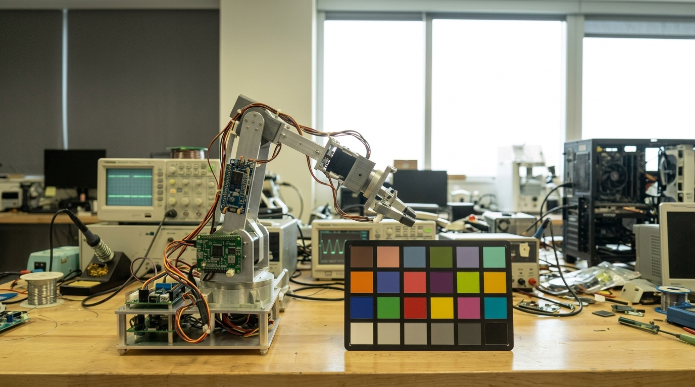

Stop Launching Washed-Out Cameras.
Your firmware and mechanical engineers built great hardware, but default sensor registers leave images green-shifted, AE hunting, and night video noisy. Big imaging consultancies demand $25k+ retainers. CamVision Tech delivers production-grade Camera ISP & 3A tuning on agile, cost-conscious sprints.

SUPPORTED SILICON, IMAGE SENSORS & LAB TESTING PROTOCOLS
See the Real Difference: Default vs. Tuned ISP
Slide horizontally to see how our calibrated register pipelines correct nasty color casts, stabilize AWB, expand dynamic range, and eliminate low-light noise artifacts.
- ❌ Uncalibrated Gray-World AWB causes severe green/yellow tint under commercial phosphor LEDs.
- ❌ Blown-out window highlights due to missing local tone mapping (LTM) & gamma curve clipping.
- ❌ Washed-out Macbeth chart color patches with Delta E > 9.4 error.
- ❌ Murky dark shadow contrast with noisy sensor black-level offset.
- ✅ Custom multi-illuminant AWB boundary polygon with calibrated D65/TL84/A locus.
- ✅ Wide Dynamic Range (WDR) tone mapping recovering crisp outdoor window highlights.
- ✅ Custom 3x3 Color Correction Matrix (CCM) calibrated to Delta E < 1.6 against Macbeth chart.
- ✅ Precise Black Level Correction (BLC) and 2DNR/3DNR texture preservation.
What is Broken in Your Camera Pipeline?
Select your prototype's hardware stack and current visual defects to instantly receive our technical diagnosis and recommended remedy.
AWB Illuminant Polygon Failure
Default driver tables use generic blackbody locus curves. Commercial phosphor LEDs have sharp 450nm blue and yellow spikes that fall outside standard curves, confusing the AWB algorithm into over-amplifying green gain.
Calibrate custom chromaticity bounding polygons under D65, TL84, CWF, and 4000K LED in a light booth. Build smooth multi-illuminant weighting tables in your platform's register schema.
Comprehensive Camera ISP Services Built for Hardware Teams
From raw Bayer sensor bring-up to objective Imatest certification, we tune every stage of the hardware ISP pipeline.
RAW Sensor Bring-Up & Calibration
Get clean raw Bayer frames into your pipeline before tuning begins. We calibrate initial sensor front-end stages to eliminate optical and analog artifacts.
- Lens Shading Correction (LSC): Optical fall-off & color shading grid.
- Defect Pixel Correction (DPC): Hot/dead pixel dynamic masking.
- Black Level Correction (BLC): Temperature-compensated pedestal.
3A Algorithm Optimization (AE/AWB/AF)
Eliminate hunting, oscillation, and unnatural color drift. We tune 3A control loops to lock in focus and exposure quickly under dynamic ambient conditions.
- Auto-Exposure (AE): <300ms settling time, 50Hz/60Hz anti-flicker.
- Auto-White-Balance (AWB): Multi-illuminant chromaticity boundaries.
- Auto-Focus (AF): Fast contrast/phase detection convergence curves.
HDR, WDR & Tone Mapping (LTM)
Tame challenging high-contrast scenes. Prevent blown-out skies while lifting deep shadows without introducing haloing or amplified noise.
- Staggered Multi-Exposure HDR: Clean short/long frame merging.
- Dual Conversion Gain (DCG): Native high/low gain switching.
- Local Tone Mapping (LTM): Natural contrast preservation.
Color Science & Custom CCM (Delta E < 1.8)
Deliver true-to-life skin tones, accurate product colors, and brand-tailored color profiles calibrated against ISO 24-patch and 140-patch charts.
- 3x3 Color Correction Matrices: Tailored per illuminant (D65/TL84/A).
- 3D LUT & Hue/Saturation: Surgical vector color control.
- Custom Gamma Curves: Pleasing highlight rolloff and midtone punch.
Noise vs. Texture (2DNR & 3DNR)
Eliminate the "waxy" smeared look and ghosting on moving objects. We calibrate spatial and temporal noise filters to preserve critical edge detail.
- Motion-Adaptive 3DNR: Heavy filtering on static areas, sharp on motion.
- Bilateral Spatial 2DNR: Low-frequency luma/chroma smoothing.
- Bitrate Optimization: Cleaner video reduces H.264/H.265 bitrate by 20%+.
ISP Tuning for Computer Vision & Edge AI
Cameras tuned for human eyes often hurt neural networks. We optimize ISP parameters specifically to maximize YOLO/SSD object detection confidence and SLAM accuracy.
- AI mAP Optimization: Preserving high-frequency gradient features.
- Distortion Unwarping: Lens calibration for visual odometry.
- OCR & Barcode Tuning: High-contrast edge isolation under glare.
Silicon Platforms & Lab Standards
We work directly with your embedded registers, vendor header files, and lab calibration charts.
Supported Processors & ISPs
Image Sensors Handled
Lab Equipment & Test Protocols
- Imatest Master Suite: Objective MTF50 sharpness, SFR, SNR, and Step Chart dynamic range measurement.
- Calibrated Multi-Illuminant Light Booth: Standardized testing under D65 (Daylight), TL84 (Store LED), Illuminant A (Tungsten 2856K), and Commercial 4000K LED.
- Test Target Charts: ISO 12233 resolution charts, 24-patch X-Rite ColorChecker, TE42 multi-purpose chart, and low-light Lux meters.
- Deliverable Deliveries: Complete parameter header dumps, tuning documentation, and before/after objective verification reports.
Zero Agency Markup. Sprint-Based Pricing.
No $25,000 corporate retainers. Choose a 1-day quick audit or a fast 2-week sprint to get demo-ready.
The fastest, lowest-risk way to know exactly what is broken in your prototype's image pipeline.
- Send 3–5 RAW frames or short video clips from your prototype.
- Objective Technical Diagnosis: We break down LSC, AWB, noise, and tone mapping bottlenecks.
- Register Action Plan: Exact recommendations your firmware team can implement right away.
- 1-Day Turnaround guarantee.
End-to-end ISP calibration to bring your prototype from rough defaults to demo or investor-ready visual quality.
- Complete 3A Stabilization: AE settling, multi-illuminant AWB, and AF convergence.
- Custom Color Science: Tailored CCM & 3D LUT for Delta E < 1.8 accuracy.
- Low-Light & HDR: Calibrated 2DNR/3DNR temporal filters and Local Tone Mapping.
- Complete Parameter Deliverables: Header files, register dumps, and Imatest test scorecard.
- Direct Engineer Slack / Teams: Zero account managers.
Ongoing engineering support as you transition from engineering verification (EVT) into mass production.
- Factory Line Calibration: Optical calibration procedures for manufacturing line test jigs.
- Multi-Sensor Unit-to-Unit Tuning: Compensating for sensor and lens manufacturing tolerances.
- Ad-Hoc Driver Troubleshooting: Linux V4L2 and register-level ISP debugging.
- Priority Engineering Access for critical investor demos and customer field trials.
Case Studies & Measurable Results
How we helped early-stage hardware teams fix critical imaging bottlenecks before shipment.
Low-Light Ghosting & High Bitrate Fixed on 4MP Battery Cam
The Problem: A hardware startup's battery-powered camera suffered severe motion ghosting on walking figures at night, and noise caused video bitrates to spike, killing battery life.
Outdoor Warehouse Lighting Stability for Dual-Sensor Stereo Robot
The Problem: Heavy indoor warehouse LED flicker and sudden outdoor sunlight transitions caused exposure oscillations and washed-out feature points, making V-SLAM lose tracking.
True-Color Delta E < 1.6 Calibration for Handheld Inspection Scope
The Problem: Non-standard mini ring LEDs caused severe pinkish skin and tissue distortion, failing clinical evaluation guidelines.
Ready to Fix Your Camera Image Quality?
Whether you need a quick $250 IQ audit or a 2-week tuning sprint, send us a message. We collaborate directly engineer-to-engineer.
Fast feedback directly from an ISP engineer.
Your sensor registers and prototype frames stay confidential.
Reach out directly via message on our official LinkedIn Page.